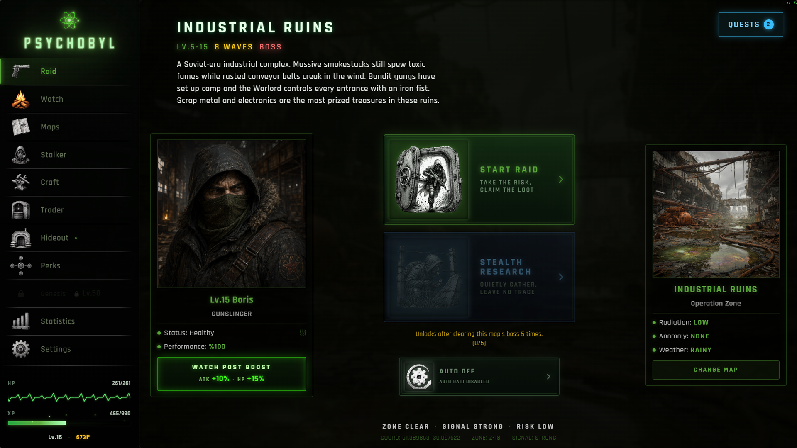
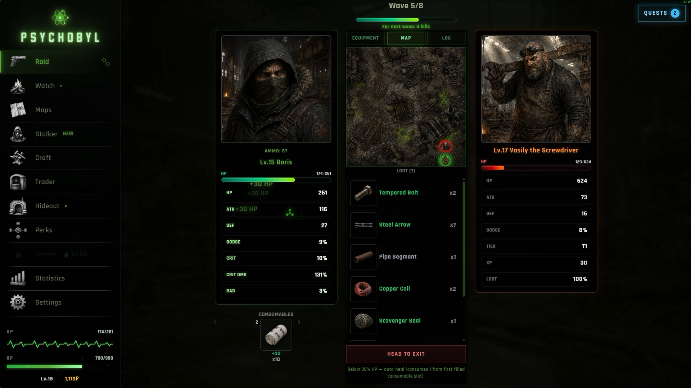
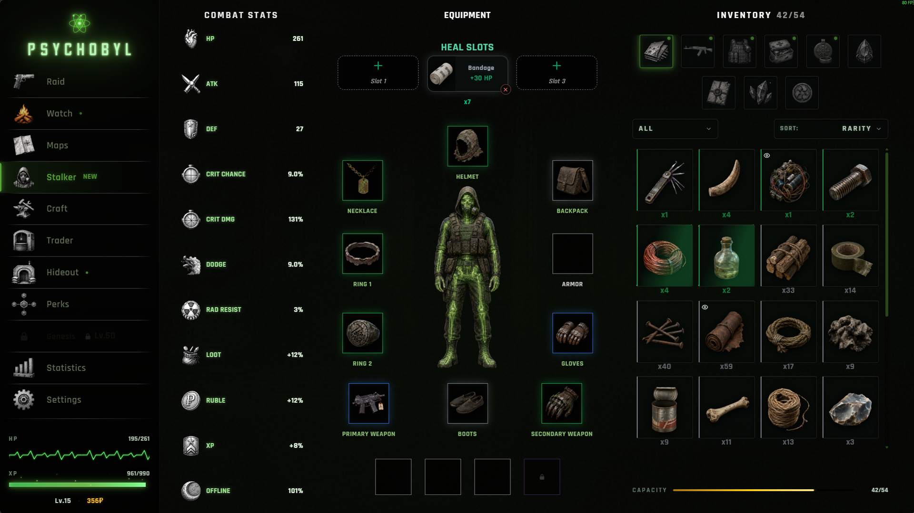
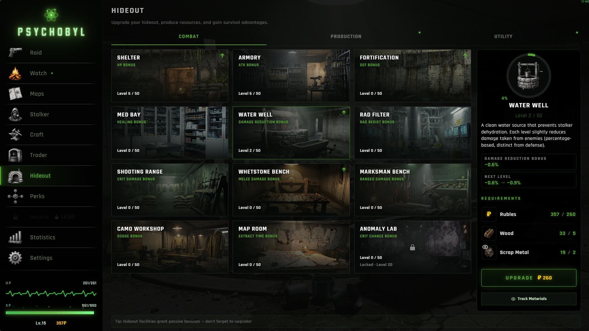
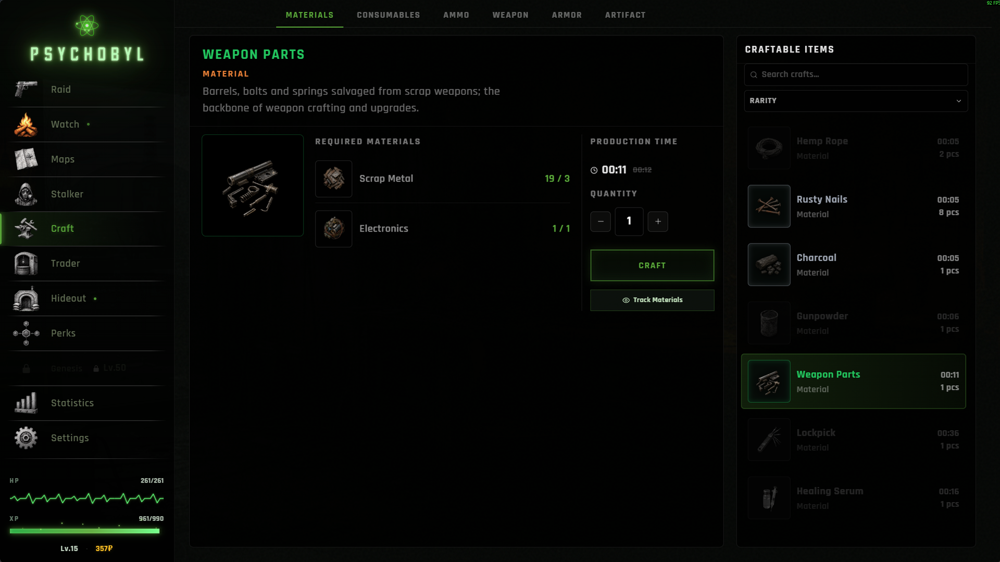
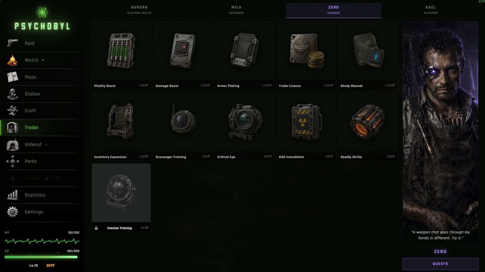
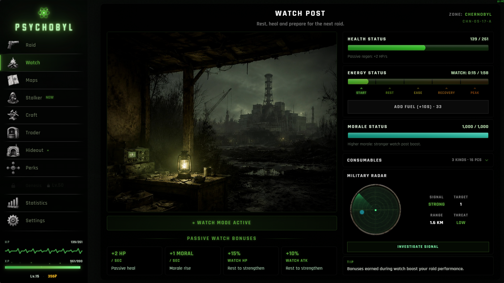
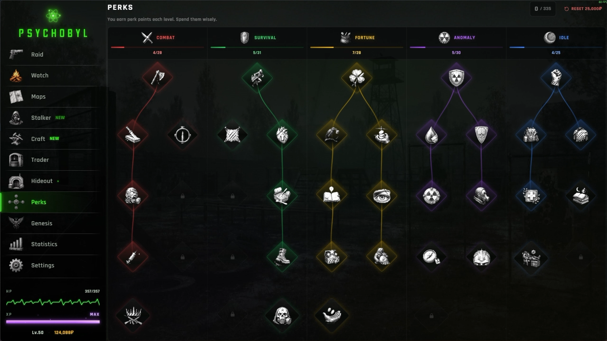

Fact Sheet
Künye
- Developer
- Geliştirici
- Boisha Games (Boris & Baisha)
- Publisher
- Yayıncı
- Boisha Games
- Platform
- Platform
- Steam (Windows) — macOS / Linux post-launch
- Genres
- Türler
- Auto-battler, Idle, Extraction, RPG, Survival, Atmospheric
- Auto-battler, Idle, Extraction, RPG, Survival, Atmosferik
- Release
- Çıkış
- Early Access — August 2026
- Early Access — Ağustos 2026
- Price
- Fiyat
- EA $5 / Full Release $8
- EA $5 / Tam Çıkış $8
- Languages
- Diller
- English, Turkish (at launch)
- İngilizce, Türkçe (launch'ta)
- Players
- Oyuncu Sayısı
- Single-player only
- Yalnızca tek oyunculu
- Engine
- Engine
- Electron + React + TypeScript
- Steam Page
- Steam Sayfası
- store.steampowered.com/app/4514090
Elevator Pitch
Kısa Açıklama
PSYCHOBYL is an auto-battler / idle / extraction / RPG hybrid set in the Chernobyl Zone in the year 2084. Every death reincarnates you through Genesis. Push deeper, layer by layer, through an endless lattice of consciousness — and try to survive the Zone.
PSYCHOBYL, 2084 yılında Chernobyl Bölgesi'nde geçen bir auto-battler / idle / extraction / RPG karışımıdır. Her ölüm seni Genesis ile yeniden doğurur. İlerledikçe bitmek bilmeyen farkındalık katmanlarını aşarak Bölge'de hayatta kalmaya çalışırsın.
Key Features
Temel Özellikler
- Turn-based wave combat — auto-battler style; decisions over reflexes
- Real extraction tension — any loot you fail to extract from the Zone is permanently lost
- A genuine idle layer — your Stalker keeps scavenging the Zone even when you're offline
- Upgrade your hideout with materials gathered from the Zone, build toward the playstyle you want, and grow stronger with every run
- The Genesis prestige loop — die, return, grow stronger, push further into the Zone. Single-player. No microtransactions. No FOMO. No live-service.
- Sıra tabanlı dalga savaşı — refleks değil, karar verme yeteneğine dayalı auto-battler tarzı combat
- Gerçek bir extraction gerilimi — Bölge'den çıkartmadığın loot kalıcı olarak kaybolur
- Otantik idle katmanı — sen çevrimdışıyken bile Stalker'ın Bölge'yi taramaya, loot toplamaya devam eder
- Bölge'den topladığın farklı materyaller ile sığınağını geliştir, odaklanmak istediğin build'i kur ve her seferinde daha da güçlen
- Genesis prestige döngüsü — öl, geri dön, daha güçlü hale gel, Bölge'nin daha derinine in. Tek oyunculu. Mikro işlem yok. FOMO yok. Live-service yok.
Setting & Story
Atmosfer ve Hikaye
The year is 2084. The Chernobyl Zone detonated a second time — but this time, what spread wasn't just radiation. Consciousness spread with it. Every mind that crosses into the Zone is shattered, then reshaped. They call it Genesis.
You are a Stalker. The Zone is calling you — because your soul is its missing piece.
You scrape by inside a brutal economy ruled by anomalies and artifacts. You raid for loot among mutants, bandits, and the Monolith factions. You bring back what you can salvage from the Zone, upgrade your hideout, and lean into the build you want to grow with — stronger with every return.
Take a breath in the hideout. Recover. Pick up quests from traders, sell salvaged weapons, earn reputation. Organize your inventory, choose from 15+ different maps, plan your skill tree, craft new gear, and prepare your character for the next raid. Move carelessly and you'll lose everything you've earned — the Zone shows no mercy.
Death is not the end. Death is part of the feedback loop. The Zone breaks you in order to build you.
Yıl 2084. Chernobyl Bölgesi ikinci kez patladı — ama bu sefer yayılan sadece radyasyon değildi. Bilinç de yayıldı. Bölge'ye giren her zihin önce parçalanıyor, sonra yeniden şekilleniyor. Buna "Genesis" diyorlar.
Sen bir Stalker'sın. Bölge seni çağırıyor — çünkü ruhun, onun son eksik parçası.
Anomalilere ve artifaktlara yön veren acımasız bir ekonomide hayatta kalmaya çalışırsın. Mutantlar, haydutlar ve Dikitaş fraksiyonları arasında loot için ölümüne baskınlar yaparsın. Bölge'den topladığın farklı materyallerle sığınağını geliştirir, odaklanmak istediğin build'i kurar, her seferinde daha da güçlenirsin.
Sığınağında soluklan, dinlen, canını yenile. Tüccarlardan görev al, silah sat, saygınlık kazan. Envanterini düzenle, 15+ farklı harita arasında seçim yap, yeteneklerini diz ve yeni eşyalar üreterek bir sonraki baskınına karakterini hazırla. Dikkatli oynamazsan kazandıklarını kaybedersin — Bölge gözünün yaşına bakmaz.
Her ölüm son değildir. Ölüm, geri besleme döngüsünün bir parçasıdır. Bu Bölge seni kırarak inşa eder.
Screenshots
Ekran Görüntüleri

Download{kind=link}

Download{kind=link}

Download{kind=link}

Download{kind=link}

Download{kind=link}

Download{kind=link}

Download{kind=link}

Download{kind=link}
Team
Ekip
PSYCHOBYL is Boisha Games' debut title. We are a two-person team:
- Boris — solo developer, handling the entire technical side (code, system design, build, deployment)
- Baisha — co-creator and design partner, driving ideation, balance, playtesting, and design decisions
PSYCHOBYL began as a love letter to the atmosphere of the S.T.A.L.K.E.R. series — but reimagined inside a totally different genre mash-up. Reproducing the Zone's claustrophobic FPS experience as a solo developer wasn't realistic; instead, we adapted it into a turn-based extraction RPG focused on decisions and economy. The idle layer is a nod to players coming home tired from work: open the game, see what your Stalker brought back while you were offline, head into the next raid.
Across 4 months of development, we used AI as a tool throughout the pipeline — Cursor + Claude for code assistance, generative AI for marketing visuals and some in-game art. Game design, mechanics, balance, lore, UI/UX, and overall direction are entirely ours (full disclosure on the Steam page).
PSYCHOBYL, Boisha Games'in ilk oyunu. İki kişilik bir ekibiz:
- Boris — solo geliştirici, tüm teknik tarafı yürütüyor (kod, sistem tasarımı, build, deploy)
- Baisha — co-creator ve tasarım partneri, fikir geliştirme, dengeleme, oyun testi ve tasarım kararları
PSYCHOBYL'in fikri, S.T.A.L.K.E.R. serisinin atmosferinden ilham alarak doğdu — ama tamamen farklı bir tür kombinasyonunda. Solo bir geliştiriciyle Bölge'nin klostrofobik FPS hissini birebir aktarmak imkânsızdı; bunun yerine kararlar ve ekonomi odaklı, sırayla oynanan bir extraction RPG'ye yeniden uyarladık. Idle katmanı ise iş çıkışı yorgun oyunculara selam: oyunu açıyorsun, Stalker'ının çevrimdışı olduğun süre boyunca topladığı şeyleri görüyorsun, ardından bir sonraki baskına çıkıyorsun.
4 aylık geliştirme sürecinde AI'ı tüm pipeline boyunca bir araç olarak kullandık — kod yardımı için Cursor + Claude, marketing görselleri ve bazı in-game asset'ler için generative AI. Oyun tasarımı, mekanikleri, dengelemesi, lore'u, UI/UX'i ve genel yön tamamen bize ait (tam beyan Steam sayfasında).
Inspirations
İlham Kaynakları
- S.T.A.L.K.E.R. series — the foundation of the Zone's identity and atmosphere
- Metro Exodus — the feel of post-Soviet industrial decay
- Melvor Idle — referenced only for the structure of the idle layer
- S.T.A.L.K.E.R. serisi — Bölge kimliği ve atmosferin temel kaynağı
- Metro Exodus — post-Sovyet endüstriyel çöküş hissi
- Melvor Idle — sadece idle katmanının yapısı için referans
Contact
İletişim
Free press keys available on request — instant download and play.
Talep üzerine ücretsiz Steam press key — anında indirip oynayabilirsiniz.
STEAM STORE PAGE